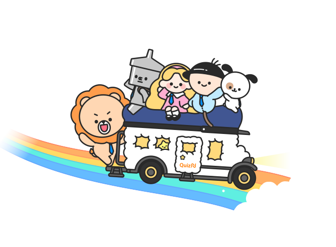

문제와 이야기를 엮어 나만의 방탈출을만들고, 몰입하는 수업을 시작하세요.

페이지를 노드로 잇고 정답·오답 분기를 지도처럼 펼쳐 봐요. 복잡한 흐름도 드래그로 자유롭게 구성합니다.
막다른 길·빠진 정답을 자동으로 찾아줘요.
객관식·주관식·OX·순서·핫스팟까지.
말풍선이 하나씩 등장하고, 블록으로 편집해요.
누가 어디서 막혔는지 타임라인으로 되짚어요.
신용카드 없이 바로 시작할 수 있어요.